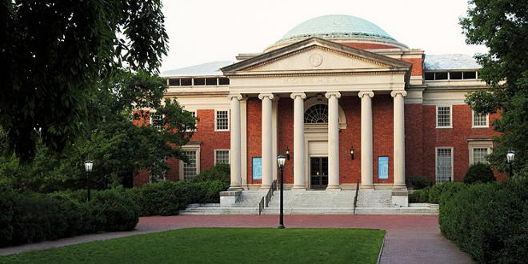
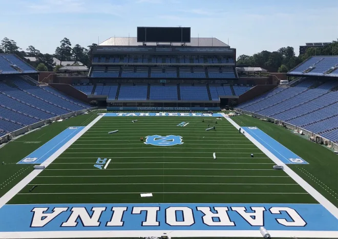

Chapel Hill is a charming town located in North Carolina, known for its rich history, vibrant culture, and beautiful landscapes. It is home to the prestigious University of North Carolina at Chapel Hill (UNC).
UNC is a top-tier public research university. Learn more about UNC Chapel Hill in this YouTube video:
Visit the Morehead Planetarium for an educational and fun experience about astronomy and space exploration.
Watch exciting athletic games and support the UNC Tar Heels. Check the schedule for upcoming games and events.
